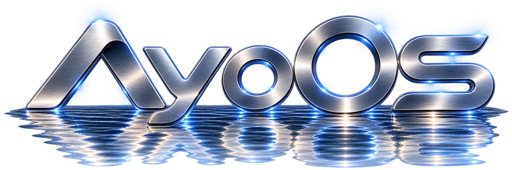
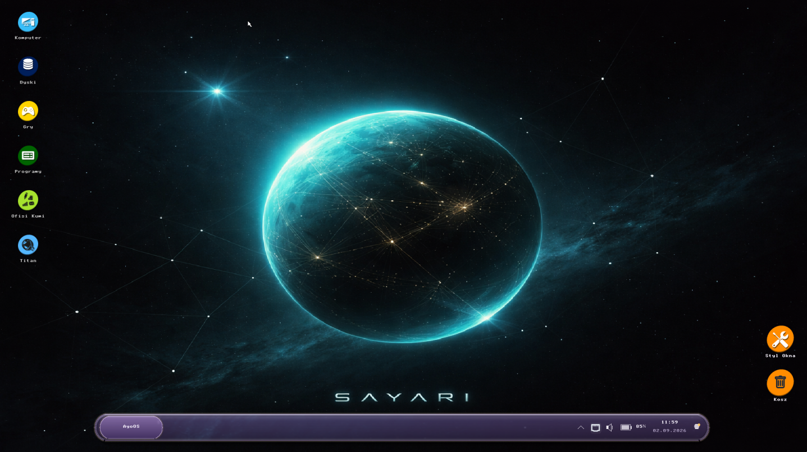

AYFS2
Natywny system plików AyoOS rozwijany nie tylko jako miejsce przechowywania danych. AYFS2 obsługuje m.in. wersjonowanie plików, rodziny powiązanych plików, kosz, snapshoty, widoki oraz rozbudowane metadane i mechanizmy integralności.


AyoOS nie jest tylko własnym pulpitem nałożonym na gotowy system. Jego kluczowe elementy — system plików, warstwa graficzna, języki i API — są projektowane jako część jednego, spójnego ekosystemu.
Natywny system plików AyoOS rozwijany nie tylko jako miejsce przechowywania danych. AYFS2 obsługuje m.in. wersjonowanie plików, rodziny powiązanych plików, kosz, snapshoty, widoki oraz rozbudowane metadane i mechanizmy integralności.
AyoOS rozwija własną warstwę VFS i sterowniki dla wielu formatów — od AYFS1 i AYFS2, przez FAT12/16/32, exFAT, BFS i Amiga FFS/OFS, po XFS, ext2 oraz kolejne systemy. Zakres obsługi rośnie wraz z rozwojem projektu.
Własny język rozwijany z myślą o AyoOS i kodzie bliskim systemowi. Nyota ma być naturalnym narzędziem do tworzenia elementów systemu bez uzależniania całego projektu od jednego zewnętrznego języka.
Własny język z rodziny BASIC przeznaczony dla ekosystemu AyoOS. Ma zapewnić prostą, czytelną drogę do tworzenia programów i eksperymentowania z systemem bez konieczności zaczynania od niskopoziomowego kodu.
Warstwa łącząca aplikacje z usługami AyoOS. Daraja udostępnia spójne API i most C ABI, dzięki któremu funkcje systemowe mogą być wykorzystywane z różnych języków, m.in. C, Zig, Python, Ruby, Lua i Free Pascal.
Nexa odpowiada za własny protokół powierzchni, kompozycję i obsługę okien, a Sayari buduje na nim interfejs użytkownika AyoOS. Dzięki temu wygląd i zachowanie środowiska graficznego nie są kopią gotowego desktopu, lecz częścią architektury systemu.